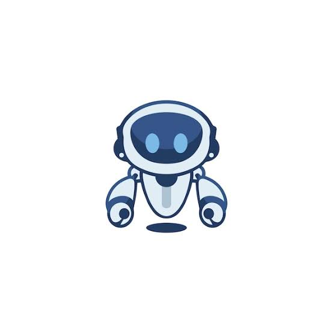

Primeiro post
Por: Davi Evarini.
Seja muito bem vindo ao meu blog, sobre programação e robotica.
Vamos compartilhar conhecimentos sobre tecnologia e programação
Por: Davi Evarini.
Seja muito bem vindo ao meu blog, sobre programação e robotica.
Por: Davi Evarini.
Meu post ajudara você a aprender sobre programação e robotica.

Por: Davi Evarini.
O Java é a linguagem mais dificil e a mais usada no mercado de trabalho.
Fonte: Mercado de Trabalho